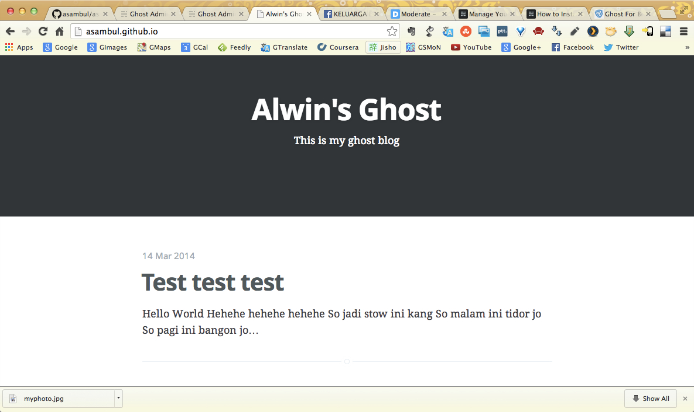

Bekerja dengan Ghost

Setelah selesai menginstal Ghost di laptop saya, saya pikir perlu untuk membuat beberapa catatan. Biar nggak lupa, atau mungkin bisa berguna untuk kawan2 yang ingin mencoba bekerja dengan Ghost.
Berikut ini adalah langkah2 untuk bekerja dengan Ghost:
- Jalankan Ghost dengan cara:
npm startdi command line - Login ke Ghost melalui browser:
http://localhost:2368/ghost - Buat postingan baru atau edit postingan lama. Jangan lupa meng-click tombol "Publish now"
- Pastikan anda berada pada directory Buster, contoh pada laptop saya:
~/buster/buster, lalu generate static pages dengan cara:buster generate --domain=http://127.0.0.1:2368. - Upload ke Github dengan cara:
buster deploy - Tampilkan di browser dengan URL:
http://asambul.github.io/(lihat screenshot pada top image)
Sejauh ini, menurut saya Ghost cukup baik dan mudah digunakan. Kita hanya perlu membiasakan diri dulu dengan beberapa commands. Kalau sudah hafal, membuat postingan dapat dilakukan dengan cepat dan mudah.